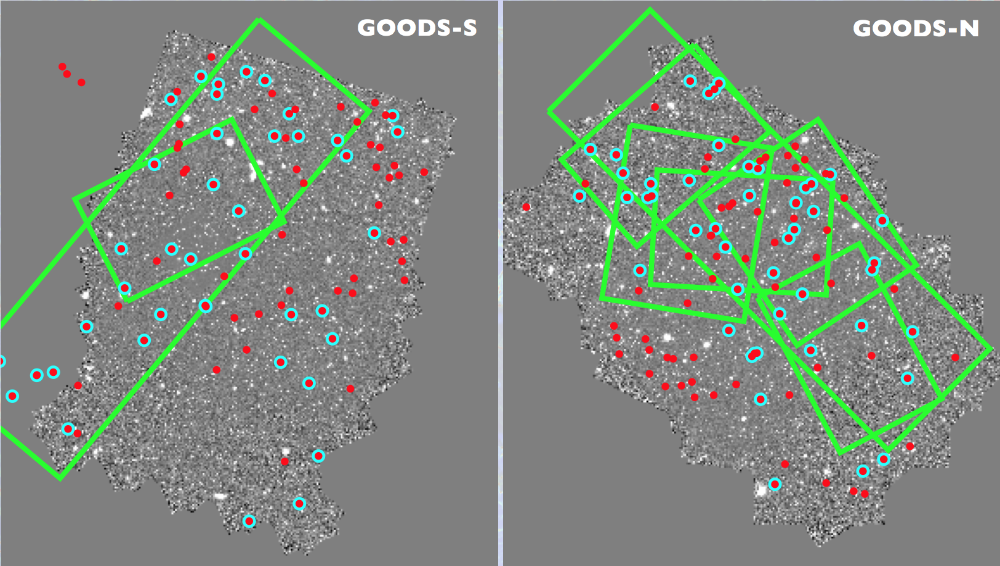
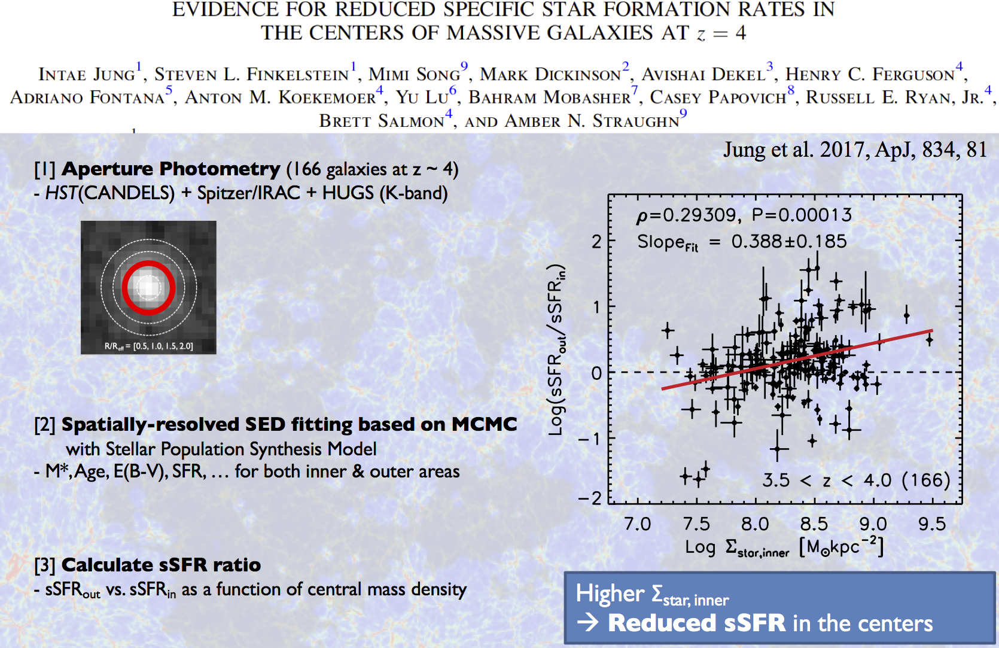
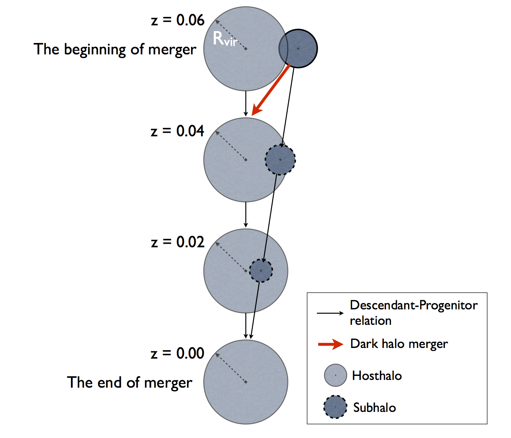

A Spectroscopic Study of Lyman Alpha Emission at z = 6 - 8 as a Probe of Reionization

The current state of our spectroscopic survey. Red circles represent the positions of the 200 JAB < 27 z > 6.5 galaxies in the GOODS-S (left) and GOODS-N (right) fields. Green rectangles shows the observed masks of DEIMOS and MOSFIRE from 17 nights of Keck telescope time.
I am currently working on spectroscopic search for Lyman alpha emission at the epoch of reionization by performing deep spectroscopic observations with the DEIMOS optical spectrograph (Oct 2014, PI: Dr. Rachael Livermore) and the MOSFIRE near-infrared spectrograph (Nov 2015, PI: Dr. Steve Finkelstein) on the Keck 10-meter telescope to constrain the end of cosmic reionization.
A Spatially-Resolved Stellar Population Study Using the HST Imaging:
reduced star-formation rates in the centers of massive galaxies at z = 4

In the PhD program at the University of Texas at Austin, I have dealt with the Hubble Space Telescope imaging data for studying spatially-resolved star formation histories of distant galaxies, which was published, Evidence for Reduced Specific Star Formation Rates in the Centers of Massive Galaxies at z = 4 (Jung et al. 2017, ApJ, 834, 81). In this work, I developed my own Markov Chain Monte Carlo (MCMC) stellar population modeling code, and performed the first-ever spatially resolved modeling of z = 4 galaxies. A key discovery of the study is that the galaxies with the highest central mass densities have reduced star formation in their centers, possibly observing the earliest phases of bulge formation.
Building Dark Matter Halo Merger Trees (ySAMtm)

(Left) schematic diagram showing the processes of a dark matter halo merger (Jung et al. 2014, ApJ, 794, 74).
During my master's program, I studied the theoretical understanding of galaxy evolution using N-body simulations and a semi-analytic model with Prof. Sukyoung K. Yi at Yonsei University in Seoul, South Korea. Particularly, I developed a dark matter (DM) halo merger tree builder, called ySAMtm, which constructs DM halo merger trees from cosmological N-body simulations. Jung et al. (2014) also studies large-scale environmental effects on galaxy assembly.